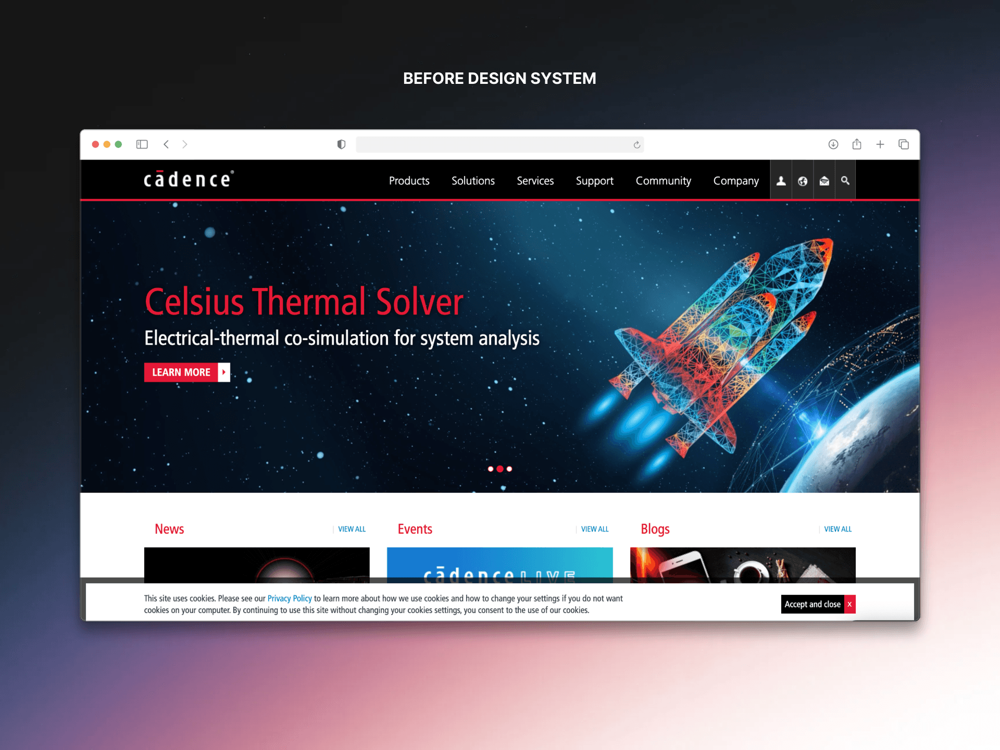
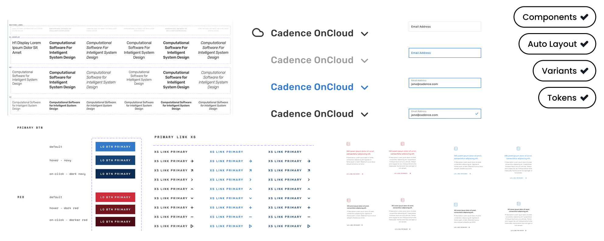

Cuboids Design System
A single source of truth for building Cadence products and the company website with consistency, efficiency, and accessibility.
 CUBOIDS · CADENCE SAAS SHOP
CUBOIDS · CADENCE SAAS SHOP
Reduce UI inconsistency and handoff friction through reusable components and clear usage patterns.
Component governance, accessible states, consistency across products and delivery.
Design-system work; describe contribution and adoption evidence without inventing time savings.
A scalable, consistent, and accessible design system for the Elevate digital platform, enabling faster product development, consistent branding, and an improved user experience across web and mobile applications.
How might Elevate build and ship products faster, with consistent, accessible UI across web and mobile?
Before the design system, Elevate faced multiple challenges:
Build a centralized, reusable design system aligned with the brand.
One system that addresses fragmentation at the root, so every team builds from the same accessible, on-brand foundation.

COMPONENT FOUNDATIONSCreate and evolve an internal design system that:
The decisions behind the experience
These are the design considerations that shaped the solution. They explain intent and trade-offs, rather than claiming outcomes that were not independently measured.
Design implication: Design-to-development alignment
Design implication: Build accessible states into components rather than fixing individual screens after handoff.
Process
AUDIT → COMPONENT DESIGN → RESEARCH → DOCUMENTATION → ACCESSIBILITY
- →Reviewed existing product and website interfaces.
- →Identified inconsistencies across buttons, inputs, tables, and navigation.
- →Mapped commonly used patterns that needed standardization.
Designed reusable, flexible components that adapt across products: buttons, inputs, dropdowns and form elements; data-heavy layouts; navigation and layout components; and feedback states (loading, error, empty).
How might we let users discover, understand, and trial Cadence products in a way that is fast, intuitive, and reliable, without oversimplifying the technical detail?

DISCOVERY FLOWSCuboids was documented as a shared system for designers and developers, reducing ambiguity and improving adoption across teams.
- →Component usage guidelines.
- →Do's, don'ts, and interaction rules.
- →Accessibility notes embedded per component.
Accessibility was integrated at the component level rather than treated as an afterthought. Core components shipped with sufficient color contrast, clear focus states, and predictable keyboard interactions, establishing a consistent baseline that every new feature inherits automatically.
 ACCESSIBLE STATES
ACCESSIBLE STATES
Cuboids is the foundation for Cadence's digital experiences, enabling teams to design and build complex products faster while maintaining consistency and quality. The system keeps evolving as Cadence grows, supporting both product innovation and brand coherence.